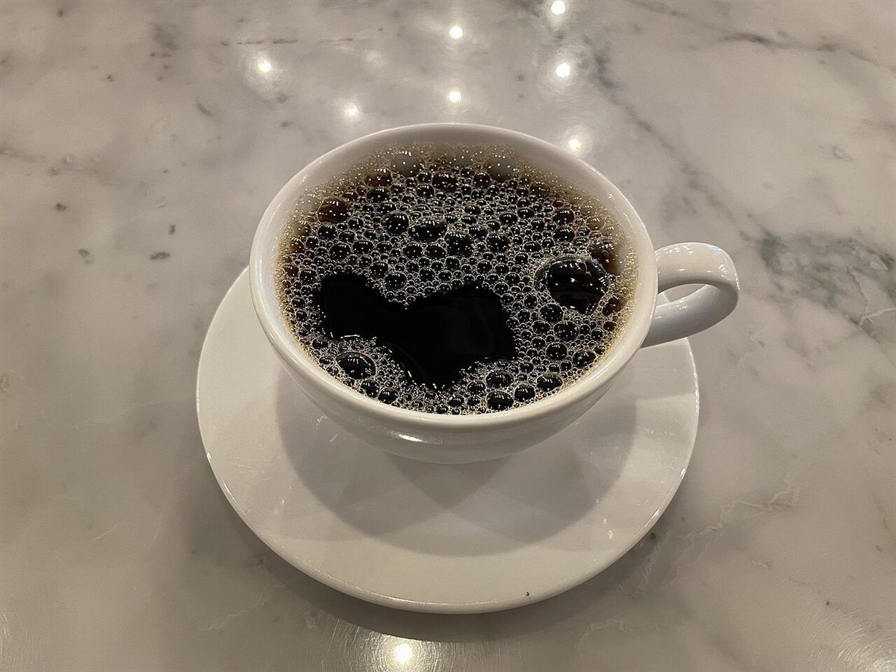
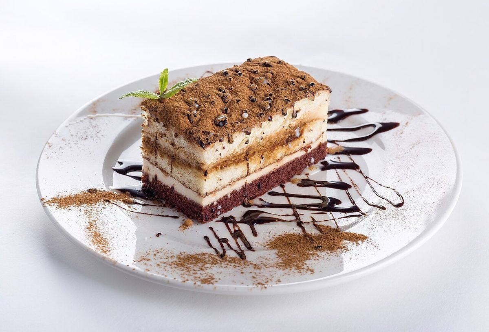
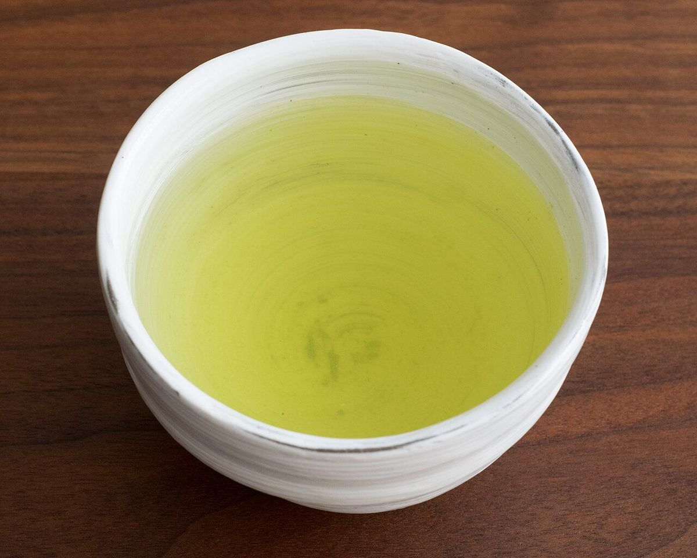
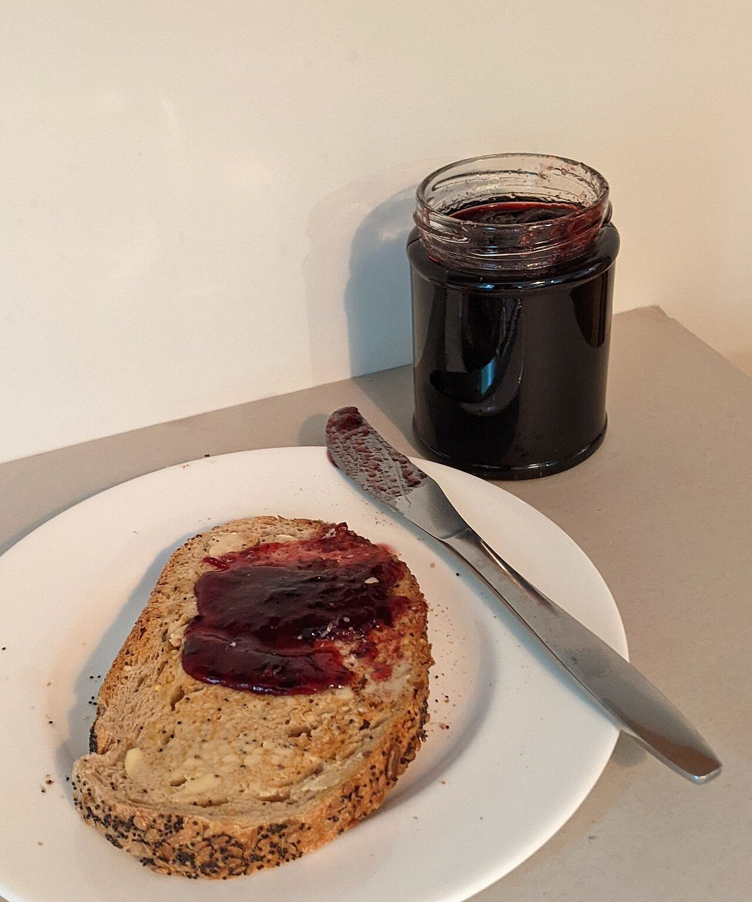

メニュー
メニューの内容・価格は準備中です(お問い合わせください)。
| 区分 | 準備中 |
|---|---|
| 商品名 | 準備中 |
| 価格 | 準備中 |
決まり次第、ここに掲載します。




掲載の写真はフリー素材のイメージで、店舗の実際の様子ではありません。他地域で撮影されたものや、撮影地が不明なものを含みます。
このページは制作側の案をもとにしたサンプルです。内容は決まり次第お店の情報に差し替えます。
メニューの内容・価格は準備中です(お問い合わせください)。
| 区分 | 準備中 |
|---|---|
| 商品名 | 準備中 |
| 価格 | 準備中 |
決まり次第、ここに掲載します。




掲載の写真はフリー素材のイメージで、店舗の実際の様子ではありません。他地域で撮影されたものや、撮影地が不明なものを含みます。